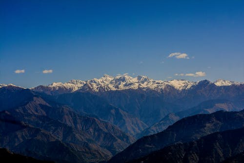
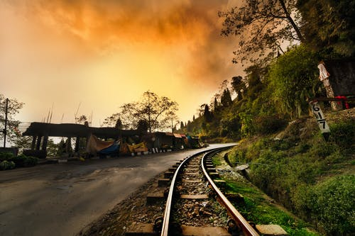
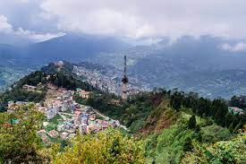

Dalhousie
Like the rest of Sikkim, not much is known about the early history
of Gangtok.[6] The earliest records date from the construction of
the hermitic Gangtok monastery in 1716.[7] Gangtok remained a small
hamlet until the construction of the Enchey Monastery in 1840 made
it a pilgrimage center. It became the capital of what was left of
Sikkim after an English conquest in the mid-19th century in response
to a hostage crisis. After the defeat of the Tibetans by the
British, Gangtok became a major stopover in the trade between Tibet
and British India at the end of the 19th century.[8] Most of the
roads and the telegraph in the area were built during this time.

Darjeeling
Darjeeling is a city and a municipality in the Indian state of West
Bengal. It lies in the Lesser Himalayas at an elevation of 2,000
metres (6,560 ft). It is noted for its tea industry, its scenic
views of the world's third-highest mountain Kangchenjunga, and the
Darjeeling Himalayan Railway, a narrow-gauge mountain railway which
is on the UNESCO World Heritage List. Darjeeling is the headquarters
of the Darjeeling district which has a partially autonomous status
called Gorkhaland Territorial Administration within the state of
West Bengal. It is also a popular tourist destination in India. In
the early 19th century during East India Company rule in India a
sanatorium and a military depot were set up in the region.
Subsequently, extensive tea plantations were established, the tea
growers developing hybrids of black tea and creating new
fermentation techniques. A distinctive Darjeeling tea emerged, which
became internationally recognised and has ranked among the most
popular black teas in the world.[6] The Darjeeling Himalayan Railway
connecting the town with the North Bengal plains was completed in
1881 and has some of the few remaining steam locomotives in service
in India. Darjeeling has several British-style private schools that
attract pupils from India and neighbouring countries. The culture of
the town reflects its diverse demographic milieu which comprises the
Lepcha, Khampa, Kirati, Gorkha, Newari, Sherpa, Bhutia, Bengali[7]
as well as other Indian ethno-linguistic groups. Darjeeling and
nearby Kalimpong were the centres of the Gorkhaland movement in the
1980s.

Gangtok
Gangtok is a city, municipality, the capital and the largest
populated place of the Indian state of Sikkim. It is also the
headquarters of the Gangtok District. Gangtok is in the eastern
Himalayan range, at an elevation of 1,650 m (5,410 ft). The city's
population of 100,000 are from different ethnicities such as Bhutia,
Lepchas, Kiratis and Gorkhas. Within the higher peaks of the
Himalaya and with a year-round mild temperate climate, Gangtok is at
the centre of Sikkim's tourism industry. Gangtok rose to prominence
as a popular Buddhist pilgrimage site after the construction of the
Enchey Monastery in 1840. In 1894, the ruling Sikkimese Chogyal,
Thutob Namgyal, transferred the capital to Gangtok. In the early
20th century, Gangtok became a major stopover on the trade route
between Lhasa in Tibet and cities such as Kolkata (then Calcutta) in
British India. After India won its independence from the British
Empire in 1947, Sikkim chose to remain an independent monarchy, with
Gangtok as its capital. After Sikkim's merger with India in 1975,
Gangtok continued as the state capital
 Ooty
Ooty
Ooty officially known as Udhagamandalam (also known as Ootacamund
(audio speaker iconlisten (help·info)); abbreviated as Udhagai), is
a city and a municipality in the Nilgiris district of the Indian
state of Tamil Nadu. It is located 86 km north west of Coimbatore
and 128 km south of Mysore and is the headquarters of the Nilgiris
district. It is a popular hill station located in the Nilgiri Hills.
It is called Queen of Western Ghats. It was the summer capital of
Madras Presidency. Originally occupied by the Badaga and Toda
people, the area came under the rule of the East India Company at
the end of the 18th century. The economy is based on tourism and
agriculture, along with the manufacture of medicines and
photographic film. The town is connected by the Nilgiri ghat roads
and Nilgiri Mountain Railway. Its natural environment attracts
tourists and it is a popular summer destination.[4] In 2011, the
town had a population of 88,430.[2] Ootacamund was rated the best
hill station in means of hospitality and nature passing other hill
stations like Munnar and Kodaikanal.